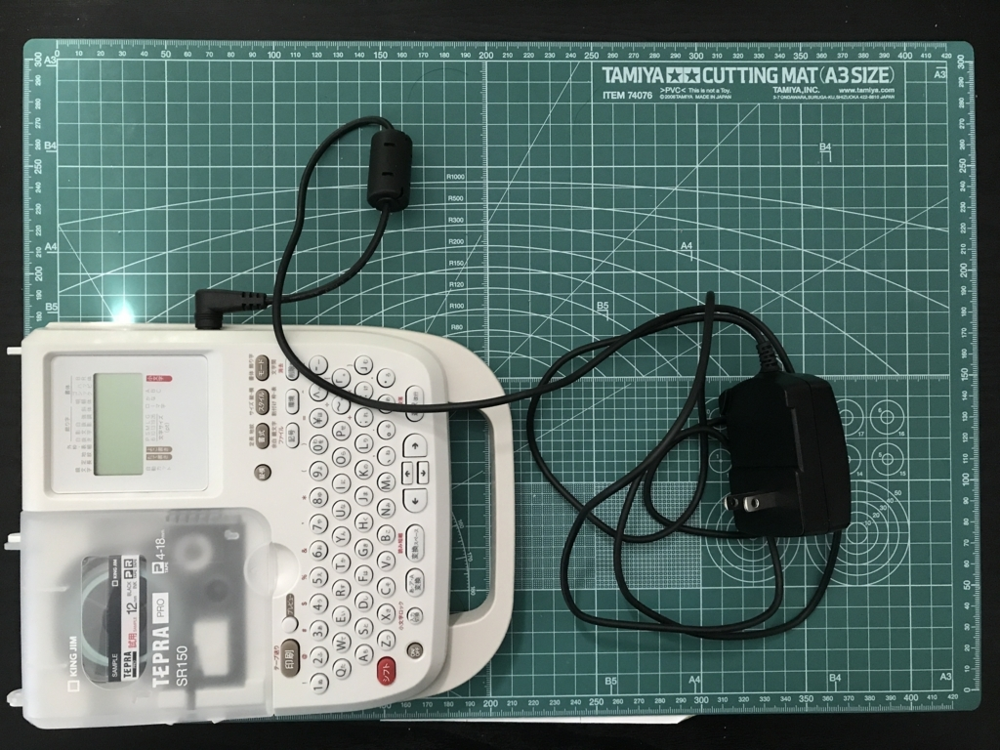

テプラPRO SR150 を買いました。
公開日：

テプラを買ったのは10年ぶりぐらいかな……前の前の会社で事務所を整理するのに使っていましたが、それ以来、まったくのご無沙汰。たまたま Amazon を散歩していて「へぇ、テプラって割と安いんだなぁ」などと思っていたら、いつの間にか購入ボタンを押していたみたいです。

キングジム ラベルライター テプラPRO SR150 オフホワイト
- 出版社/メーカー: キングジム(KINGJIM)
- 発売日: 2011/12/16
- メディア: オフィス用品
- 購入: 5人 クリック: 18回
- この商品を含むブログ (4件) を見る
テプラにはいろいろ種類があるようですが、このスタンダードモデル SR150 は実売で 5,000 円ぐらいです。きっとテープカートリッジで利益を上げるんだろうなー。
電池で動くのは手軽でいいなと思いましたが（エネループは推奨されていないかもなので注意）、説明書をよく読むと電池での駆動はあまり効率的ではないようで、AC アダプターで使うのが正しいみたい。

というわけで、さっそく AC アダプターにテプラを貼りました。アダプターってどれがどれのかよくわからなくなるじゃないですか。でも、こうしておけば一発でわかるよね、多分。
どうしても覚えられない Mac のショートカットも、Macbook のパームレストにメモしておきました。これで Mac を使わなくちゃいけなくなった時も大丈夫。それにしても、10年経つのに相変わらず字はギザギザなんだな……みんなあんまり気にしないものなのか。

あと、収納も考えてみたのですが、本体は B5 程度。アダプターと説明書も入れておきたいので、今回は A4 のキャリングケースにいれることにしました。今回はこれもキングジム製で統一してみましたよ。

キングジム キャリングケース シンプリーズ A4 グリップタイプ 294TSPW 透明
- 出版社/メーカー: キングジム(KINGJIM)
- 発売日: 2010/12/24
- メディア: オフィス用品
- この商品を含むブログを見る
ちょっとゆったり目ですが、入らないよりはいいかな。透明なので中がわかるのもいいかも。100円均一のケースよりは全然質がいいので、まとめ買いで安くなったりしないかなーなんて思いました。

本棚にツッコんでおけるのでなかなかいいかなと思います。